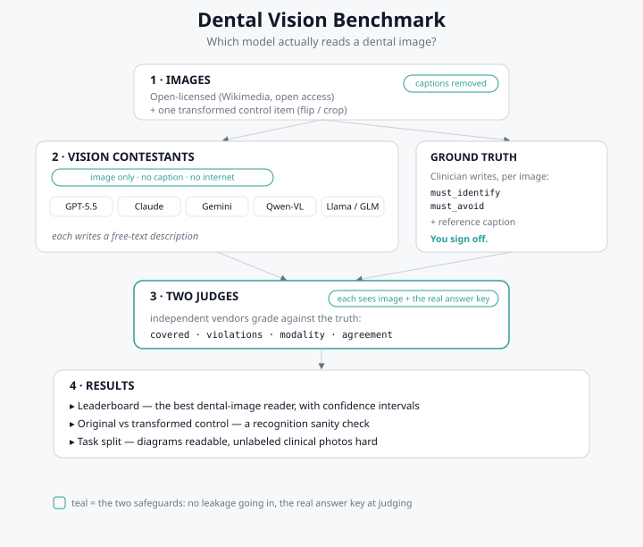

The useful signal is the task, not the rank.
The top three systems sit inside one another's confidence intervals at 90 images. The robust finding is where reading breaks down: every model handles diagrams and labeled figures far better than an unlabeled clinical photo, where the weaker models fall toward 20 to 29 percent. Reading an unlabeled real mouth is the hard, unsolved part.
Read this as a reproducible benchmark report. Small score gaps are noisy. Numbers come from the corrected run, severity is reported and not gated, ground truth was clinician-reviewed, and every raw file is one click away.
How it works
Image only going in, the real answer key at judging. Download the SVG ↗
{kind=link}

Pass rate by model
A pass needs every must_identify point covered and no must_avoid error. Re-rank by split; select a model for its full record.
Where the task gets hard
Pass rate per split. The unlabeled clinical-photo column is the hardest and most informative test.
The 90 images
Each dot is one model's pass or fail on that image. Hardest images first.
Two judges, reported not assumed
Every description was graded by a primary judge (Claude Opus 4.8) and an independent secondary (GPT-5.5). Absolute pass rates are judge-dependent; the ranking is stable.
Reproduce it
The repository carries the image set with clinician ground truth, the raw per-row results, the pinned run manifest, the runner, the analysis and this report's generator. One command rebuilds every table and this page.
@misc{teixeirabarbosa_dental_vision_benchmark_2026,
author = {Teixeira Barbosa, Francisco and Robles Cantero, Daniel},
title = {Dental Vision Benchmark: Which Vision Language Model Best Reads a Dental Image?},
year = {2026},
url = {https://github.com/Tuminha/dental-vision-benchmark}
}